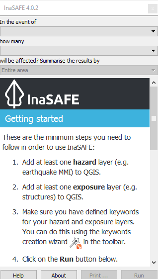

Chapter 2: QGIS and InaSAFE in Disaster Management¶
Learning Objective:
Understand the role of GIS in disaster management
Understand the importance of data
Understand the benefits of QGIS/InaSAFE in disaster management.
2.1 GIS for Disaster Management¶
GIS has an important role in disaster management. A disaster management is intended to manage and support both government and community preparedness, mitigation, prevention, response and recovery of a potentially hazardous event, such as an earthquake or tsunami. The purpose of this disaster management is to minimize casualties and losses in case of such an event.
Before contemplating a disaster management, one must first consider potential disaster scenarios. A good disaster management will likely answer questions such as:
What sort of disaster is likely to happen?
How we prevent the disaster?
How widespread will the impact be?
Who is responsible for helping?
What should be given as aid?
What should we do when the disaster already happen?
Where are the priority areas?
In other words, disaster management answers the question, who does what, where and when?
A Geographic Information System is able to help planners answer these questions, especially the important spatial elements of contingency planning. GIS may be used to model hazardous events so that they can be better predicted.
It may be used to plan evacuation routes prior to a disaster. When a disaster occurs, GIS may also play a role in the emergency response phase. It can be used to map the area affected and position of refugee camps, so that helpers can be directed to the most useful locations to aid those affected. After a disaster, GIS may also be used to plan for rehabilitation and reconstruction. Overall, GIS helps to perform analysis of a disaster, damage and losses caused, and opportunities for reducing risk.
2.2 The Importance of Data¶
We previously learned how to start collecting exposure data. When thinking about GIS it is important to remember that if your data is bad, your analysis will be bad also. Hence the more detailed and accurate your data is, the better your analysis and action may be during a disaster.
As we shall see in this unit, some data may be obtained from various agencies that specialize in certain kinds of data. For example, we will obtain our hazard models (hazard data) from various organizations that specialize in this. As for exposure data, some data we may find through agencies, such as population data. For infrastructure data, collecting data at a community level is key, which is why in the previous unit we learned how to utilize the crowd-sourced OpenStreetMap platform.
2.3 QGIS and InaSAFE¶
QGIS is a user-friendly open-source Geographic Information System (GIS). It runs on Windows, Mac OSX, and Linux. QGIS provides a continually growing number of capabilities provided by core functions and plugins. You can visualize, manage, edit, analyse data and compose printable maps.
QGIS is great because:
It’s completely free. It doesn’t cost anything.
- It’s free, as in liberty. If you think a feature is missing, you can sponsor the development of a feature,
or add it yourself if you are familiar with programming.
It’s constantly developing and improving. Because many people continue adding features, it keeps getting better.
- Extensive help and documentation is available. If you have problems you can always turn to the software documentation,
other QGIS users, or even the developers.
QGIS has many plugins which extend the core functionality of the software. One of these plugins is InaSAFE, which can be used to analyse the impact of a disaster and create a list of actions needed to be taken when a disaster occurs. QGIS and InaSAFE can also help to determine the location of ideal places of refuge, evacuation routes, areas likely to be damaged, and more.
InaSAFE provides overviews of potential disaster scenarios, of their outcomes, as well as maps which can aid decision makers when disaster strikes. Maps are an effective way of communicating disaster impact, by showing in a simple way the areas of damage, such as the extent of flood-affected areas and buildings affected by a flood.